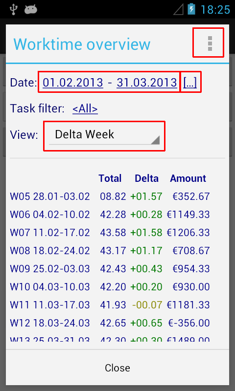

Zeiterfassung
Wie kann ich die Überzeit über mehrere Wochen oder Monate auswerten?
• Gehe zu Menü / Arbeitszeit-Übersicht
• Wähle den gewünschten Zeitraum von/bis oder klicke auf [...] um früher benutzte Werte auszuwählen
• Wähle eine "Ansicht" mit Delta
• Über das Kontextmenü rechts oben kann optional nur das Gesamttotal angezeigt werden
